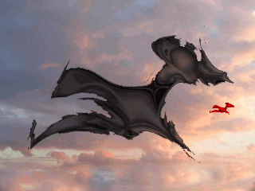

Animation gallery
color shift fractals
Animation gallery
color shift fractals
These are animations in GIF format. Because HTML supports this format, no special software is required. But file sizes may be large. Without a fast modem, DSL or cable connection, download times may be slow. File sizes are given so the viewer may be able to anticipate download time. The animations emphasize color transitions and are therefore called color shift fractals. They run forever, or at least until the page is exited.
|
 |